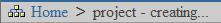

| Chapter 4. Luntbuild Home Page | ||
|---|---|---|
 |  | |
| Chapter 4. Luntbuild Home Page | ||
|---|---|---|
| | | |
After you login, Luntbuild Home page will be displayed:

There are four tabs on Home page:
builds - shows all Luntbuild builds
projects - shows all Luntbuild projects
users - shows all Luntbuild users
properties - shows general Luntbuild properties
Just click on the tab and appropriate tab page will display.
Top area of the page contains navigation area  that will help you to navigate quickly throughout the different pages of Luntbuild. For example, when you are creating a new project (by clicking New icon on Project tab page, you can jump quickly to Home page by clicking Home link in the navigation area.
TODO system log
TODO refresh
TODO logout
| | | |
| Chapter 3. Login to Luntbuild |  | Chapter 5. Setting General Luntbuild Properties |